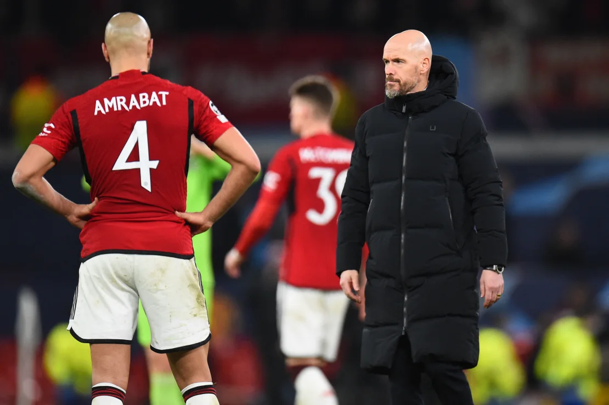
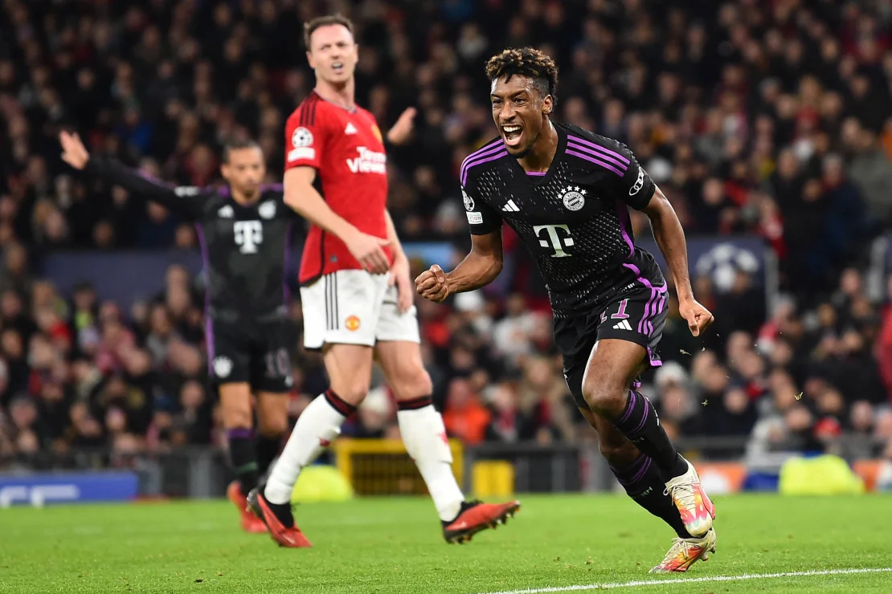

>> Manchester United exit from the Champions League

- The sound of boos rang out around Old Trafford once again.
- It’s become the theme tune for Manchester United’s disastrous season, which plumbed new depths on Tuesday as the team
crashed out of the Champions League following a 1-0 defeat at home to Bayern Munich.
- When the draw was made back in August, a group featuring Bayern, Copenhagen and Galatasaray didn’t immediately look like
it would be a difficult one to qualify from.
- But not only did Manchester United fail to get out of the group, Erik ten Hag’s side finished rock bottom with a grand
total of four points from six games, recording just one win and finishing with the worst defensive record in history for
an English club in the Champions League.
- However, to say United crashed out would imply the team made some noise as it exited the competition, but in reality
this was as meek of a Champions League departure as you’re ever likely to see.
- As the match neared its conclusion, Bayern’s supporters started singing “Football’s Coming Home” and “This is a Library”
to inflict further pain on the home supporters.
- In a game that the players and manager knew only a win would give them a chance of qualifying for the round of 16, the
team mustered one shot on target. One. And it would be hard to even class that shot on target as a chance, with Manuel
Neuer comfortably punching away Luke Shaw’s fanciful long-range shot in the first half.
- United fans will be under no illusions that this team and manager currently appear to be well out of their depth, which
would have made it all the more concerning to hear Ten Hag describe United’s woeful performance against Bayern as “very good.”

- “We didn’t lose it [a place in the last 16] today, that’s clear,” Ten Hag told TNT Sports after the match. “I think we
had some good performances, but then we also made mistakes, some individual errors from more players and it’s not good
enough.
Source : Click here